Processo de Retorno
Para realização do retorno do Beneficiamento de Compras é utilizado a tela de BR One :: Assistente de retorno.
Para acessar a tela de Assistente de Retorno é necessário ir no menu:
Produção -> Beneficiamento -> Compras -> Assistente de retorno
No assistente de retorno é necessário selecionar um Fornecedor e Filial para que os documentos vinculados a eles sejam exibidos nas abas Pedido de Compra e Remessa.
Aba pedido de compra
É possível utilizar os filtros para encontrar o pedido que deseja de acordo com o fornecedor do cabeçalho, selecione as linhas do item de serviço referente a Ordem de produção (OP), informe a quantidade que deseja realizar o retorno e clique no campo Liberar pedidos para retorno.
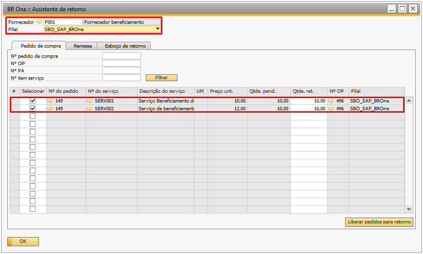{kind=link}
Aba Remessa
A segunda aba é de Remessa e nela você pode utilizar os filtros para encontrar os documentos de remessa (Devolução de mercadoria ou Dev. Nota Fiscal de Entrada) de acordo com o fornecedor do cabeçalho. Para liberar as linhas para o retorno, selecione a mesma na coluna Selecionar, informe as quantidades de peças boas, refugo e não industrializado e selecione o botão Liberar remessas para retorno.
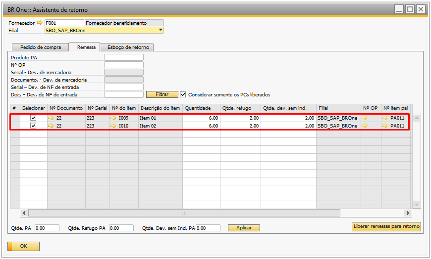{kind=link}
Nesta aba há também a possibilidade de utilizar o parâmetro Considerar somente os PCs liberados, quando o mesmo está marcado, somente irá aparecer as remessas que possuírem um pedido de compra liberado, caso contrário, a remessa não será exibida, neste caso, basta desmarcar a flag e realizar o filtro das mesmas.
Aba Esboço de retorno
Na aba Esboço de retorno o campo NF retorno serviço vai definir se o retorno do beneficiamento (Itens de serviços) será feito no Mesmo documento ou em Documentos separados.
Nesta aba também serão selecionados os documentos a serem retornados, marque as linhas e clique no botão Gerar, assim os documentos serão gerados em esboços de acordo com o tipo de retorno informado.
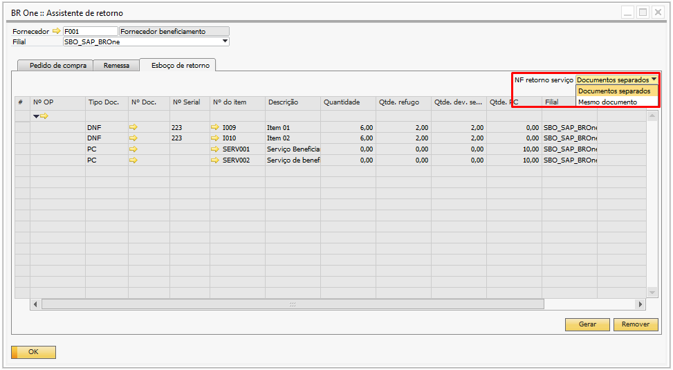{kind=link}
As formas que os documentos serão retornados, são:
Caso a opção Gerar NF de entrada e dev.de NF de entrada das configurações do beneficiamento estiver marcada e estiver para gerar Documentos separados, serão gerados os esboços:
Nota Fiscal de Entrada para item de serviço;
Nota Fiscal de Entrada para componentes de terceiros definido como peças boas;
Nota Fiscal de Entrada para os componentes de terceiros definido como refugo e não industrializados.
Caso a opção Gerar NF de entrada e dev.de NF de entrada das configurações do beneficiamento estiver marcada e estiver para gerar Mesmo Documento, serão gerados os esboços:
Nota Fiscal de Entrada com o item de serviço e os componentes de terceiros definido como peças boas;
Nota Fiscal de Entrada para os componentes de terceiros definido como refugo e não industrializado.
Caso a opção Gerar NF de entrada e dev.de NF de entrada das configurações do beneficiamento estiver desmarcada e estiver para gerar Documentos separados, serão gerados os esboços:
Nota Fiscal de Entrada para item de serviço;
Recebimento de Mercadoria para os componentes de terceiros definido como peças boas;
Recebimento de Mercadoria para os componentes de terceiros definido como refugo e não industrializados.
Caso a opção Gerar NF de entrada e dev.de NF de entrada das configurações do beneficiamento estiver desmarcada e estiver para gerar Mesmo Documento, serão gerados os esboços:
Nota Fiscal de Entrada com o item de serviço e os componentes de terceiros definido como peças boas;
Recebimento de Mercadoria para os componentes de terceiros definido como refugo e não industrializado.
Todos os documentos gerados são listados na tela BR One :: Esboços gerados.
Esboços gerados
O sistema irá abrir a tela de esboços gerados, nela é possível validar cada esboço de documento e adicioná-los separadamente. Caso identifique alguma informação incorreta é possível remover todos os esboços sem exceção, através do botão Remover esboços, porém para essa funcionalidade nenhum dos esboços pode ter sido adicionado, caso adicione algum esboço a função não irá permitir remover os demais esboços.
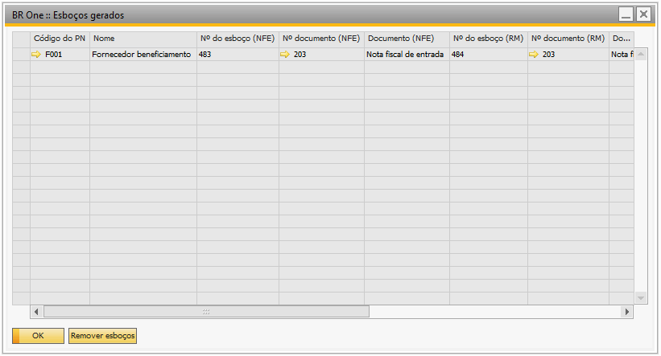{kind=link}
Documentos separados
Esboço de NF de entrada
Essa nota será utilizada para cobrança do serviço e vai recuperar informações do pedido de compra como: Item de serviço, quantidade, depósito e valor.
A utilização será recuperada do campo Utilização para serviços das configurações do beneficiamento.
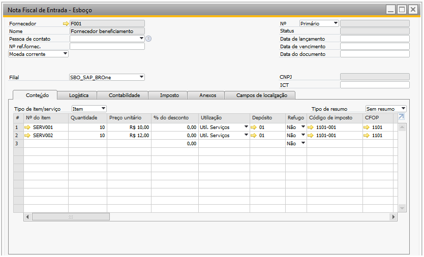{kind=link}
Nota fiscal de entrada para serviços gera LCM e Rateio de Custos de Terceiros
Contabilização do LCM da Nota:
Crédito: PN/ Impostos
Débito: Impostos recuperar/ Outras Despesas Operacionais
Esboço de Recebimento de mercadoria ou Nota Fiscal de Entrada
Nas linhas do esboço do recebimento, o sistema retorna os componentes que foram beneficiados (peças boas).
A utilização é carregada do campo Utilização para materiais (retorno) das configurações do beneficiamento e o depósito da linha é carregado conforme configuração para multifiliais ou base simples.
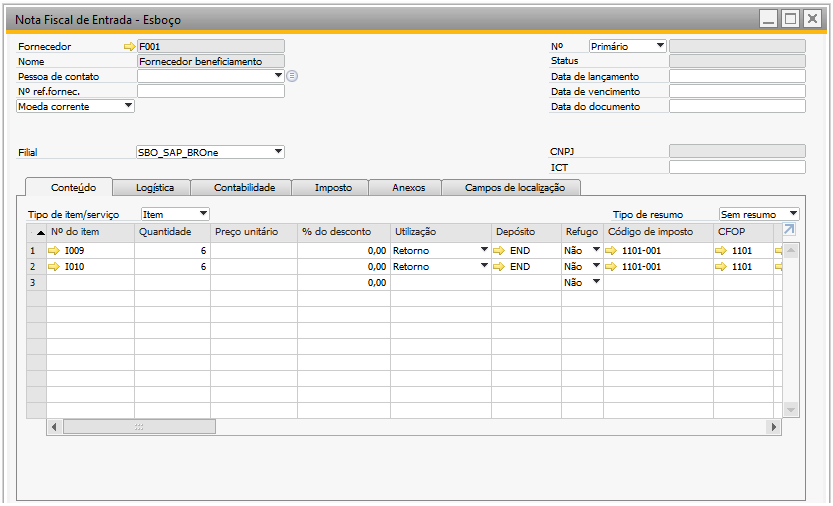Ao adicionar o Recebimento de mercadoria ou Nota Fiscal de Entrada, o add-on abrirá a tela de saída de insumos para os componentes com método de baixa como manual.
No cabeçalho é informado o número da OP, o depósito conforme cadastro do PN, sequência da operação do beneficiamento e a quantidade de P.A.
{kind=link}
A saída de insumos irá gerar um LCM:
Crédito: Conta de Estoque
Débito: Conta de material em processo (WIP)
Esboço de Recebimento de mercadoria ou Nota Fiscal de Entrada (Refugo e não industrializados)
Nesse esboço serão exibidos os componentes que foram apontados como refugo e não industrializados.
Para os componentes classificados como refugo, a utilização será preenchida do campo Utilização para materiais (retorno), já para os componentes não industrializados a utilização será preenchida do campo Utilização para dev. mat. não Indust., ambos definidos na tela de configurações do beneficiamento. Depósito será preenchido conforme a configuração para multifiliais ou base simples.
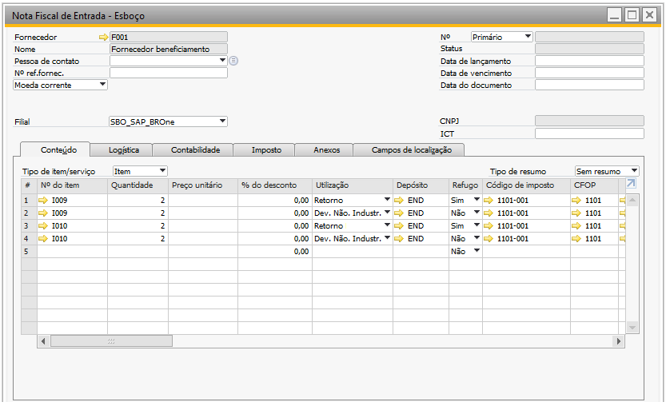{kind=link}
Para os itens Itens não industrializados, ao adicionar o documento de recebimento de mercadoria ou nota fiscal de entrada, será validado o parâmetro Gerar transferência de estoque por DI da tela BR One :: configurações de beneficiamento. Caso esteja marcado, o sistema irá gerar e adicionar a transferência de estoque automaticamente por DI, caso esteja desmarcado o sistema irá abrir a tela de do “Pedido de transferência de estoque/Transferência de estoque” para o usuário validar e adicionar.
A transferência utilizará os depósitos:
Do depósito: Padrão do fornecedor
Para depósito: Padrão do item
{kind=link}
A transferência de estoque irá gerar um LCM:
Credito: Conta de estoque
Debito: Conta de estoque
Para os itens refugados com método de baixa como manual, será aberto a tela saída de insumos.
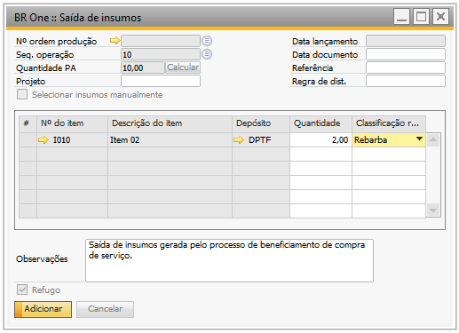{kind=link}
A saída de insumo para itens refugados gera LCM:
Crédito: Conta de estoque
Débito: Conta de material em processo (WIP)
Importante
As peças retornadas como não industrializadas estarão novamente disponíveis para remessa.
Mesmo documento
Esboço de NF de entrada:
Essa nota será utilizada para a cobrança do serviço e vai recuperar informações do pedido de compra como: Item de serviço, quantidade, depósito e valor. A utilização será recuperada do campo Utilização para serviços das configurações do beneficiamento. Como está definido para mesmo documento, os componentes com as peças boas também são emitidos nessa Nota Fiscal de Entrada. A utilização para esses componentes é carregada do campo Utilização para materiais (retorno) das configurações do beneficiamento.
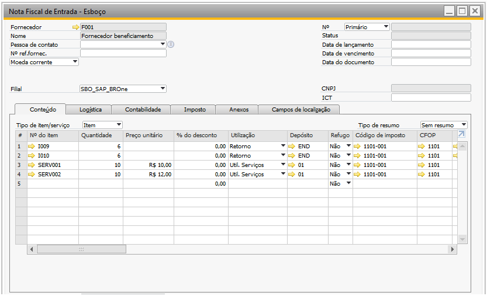{kind=link}
Nota fiscal de entrada para serviços gera LCM e Rateio de Custos de Terceiros.
A contabilização gerada na Nota:
Crédito: PN/ Impostos
Débito: Impostos recuperar / Outras Despesas Operacionais
Ao adicionar o NF de Entrada, o add-on abrirá a tela de saída de insumos para os componentes com método de baixa como manual.
No cabeçalho é informado, o número da O.P., a sequência da operação do beneficiamento e a quantidade de P.A.
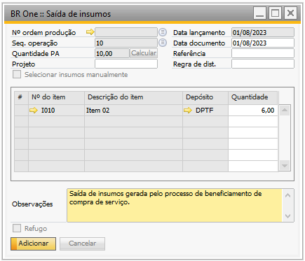{kind=link}
A saída de insumos irá gerar um LCM, e o depósito é recuperado do padrão do fornecedor.
-Credito: Conta de Estoque
-Debito: Conta de material em processo (WIP)
E o processo de Refugo e Material não beneficiados, ocorre normalmente conforme tópico Esboço de Recebimento de mercadoria ou Nota Fiscal de Entrada (Refugo e não industrializados).
Rateio de custos de terceiros
O Rateio de custo de terceiro é realizado com base na NF de Entrada do componente de serviço, com o valor sem os impostos de acordo com a quantidade.
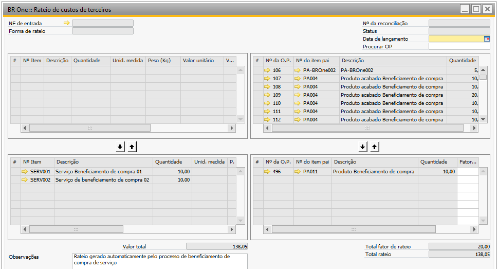{kind=link}
Ao adicionar manualmente uma nota pela tela Rateio de custos de terceiros, é essencial seguir certas premissas para garantir que essas notas sejam exibidas ao selecionar o campo NF de entrada. Estas premissas incluem:
Item de serviço(sem ser estocável)
Deposito de envio direto
O campo Rateio de terceiros, aba Dados de produção, deve estar marcado
O campo Utilizar no rateio de custo de terceiros, aba Dados de produção, não pode ser marcado
Relatório de vínculos com Ordem de produção de Beneficiamento
Foi adicionado um recurso chamado Relatório de vínculos com OPs de Beneficiamento no menu auxiliar da Nota Fiscal de Entrada. Esse recurso só pode ser acessado quando o documento da Nota Fiscal estiver no modo OK, indicando que todas as alterações necessárias já foram realizadas. Ao selecionar o Relatório de vínculos com OPs de Beneficiamento, uma nova tela será exibida, contendo informações sobre os documentos vinculados por meio do processo de beneficiamento.
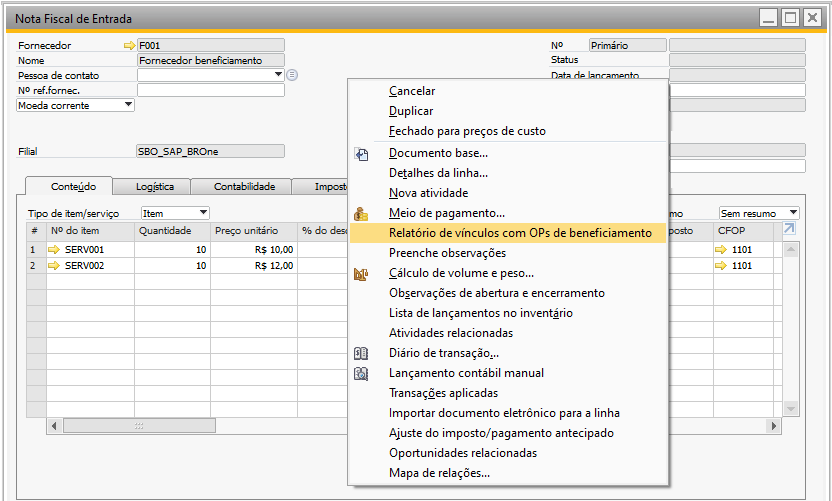 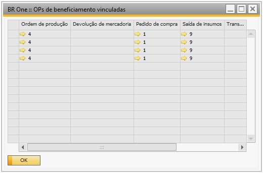{kind=link}
{kind=link}